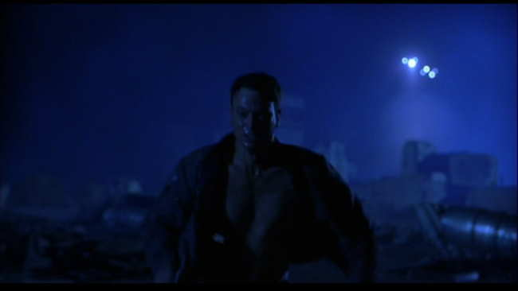
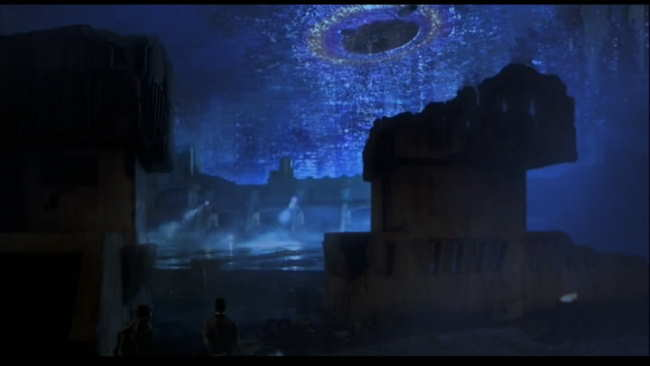
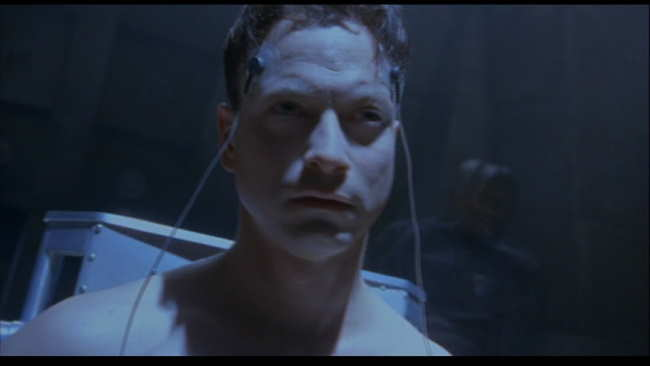
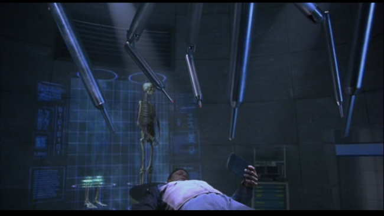
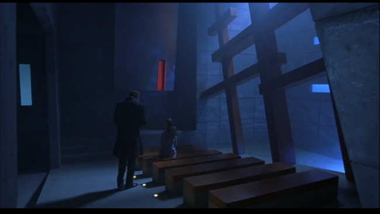
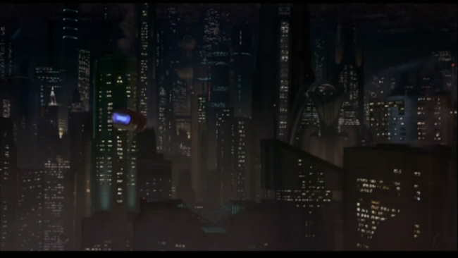
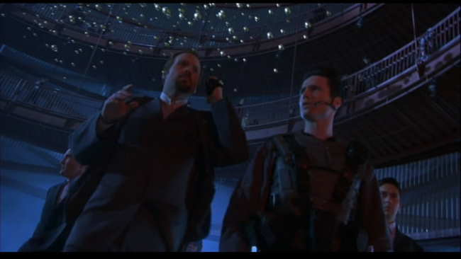
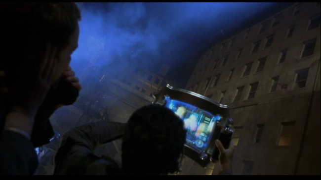
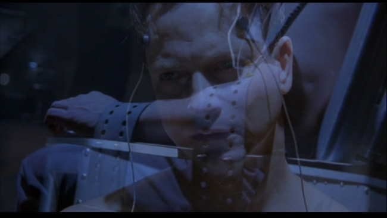

Movie review by : SFAM
Year : 2001
Directed by : Gary Fleder
Written by : Philip K. Dick (story), Scott Rosenberg (adaptation), Caroline Case et a. (screenplay)
Degree of Cyberpunk visuals : Medium
Correlation to Cyberpunk themes : Medium
Rating : 6/10
Key cast members :

Overview: Impostor got bashed by critics for having bizarre cut always, too many slow motion scenes, and generally weird and herky-jerky cinematography decisions. Additionally, others criticize it due to originally being a 30-40 minute short that got extended into a full-length movie. While all true, I truly like both the story (basically the Fugitive, done in a near future setting) and the acting, especially by Gary Sinise and Madeleine Stowe. While the cinematography is definitely subpar in this Philip K. Dick story, the movie itself is still worth a watch.

The Story: Impostor is set in the year 2079, a time when a race of aliens are attempting to invade the earth. To protect the population, humans now live in high-tech "bubbles" which seem to be able to keep out Alien weapon systems. Because of this, the aliens have resorted to creating DNA-based replicants, not unlike those in Battlestar Gallactica, by a process which apparently involves copying captured humans. These replicants are in actuality very powerful bombs, but have no self-awareness of being replicants ? when their "trigger" is invoked (such as being in close proximity to their target), they explode.

Sinise plays Spencer Olham, a weapons scientist who has been accused of being replaced by a replicant (called a cyborg in the movie). The security head (Vincent D'Onofrio) captures him and threatens to rip out his heart in order to prove that he's not a human. Sinise escapes and then engages on a journey to prove his innocence. Olham determines that he can prove his innocence by equipment at the hospital where his wife (Madeleine Stowe) works, that compares a previous body scan with his current body. Unfortunately, he's already gotten out of the city, and now needs to figure out how to get past security to return.

How Do You Know You're You? This, in essence is the question Impostor is asking when it's not in chase-filler mode. Is Spencer Olham a human caught in a horrid mistake, or is he a cyborg comprised of human-like bio-matter that is in actuality a powerful bomb sent by aliens to infiltrate Earth's defenses in order to kill human leadership? If you were a cyborg-replicant imbued with the memories of the original host, how could you figure it out? Imposter briefly mentions the notion that the cyborgs don't have a soul, but this is never pursued. One wishes they had come up with some way of quantifying a soul. But in the end, we are left to answer this question ourselves.

The Middle "Chase" scenes are Filler: Originally, Impostor was shot as a 30-40 minute movie short that was intended to be part of a larger collection. Apparently, Miramax liked the short enough (or cooled to the short collection idea) that they wanted it extended into a full length feature film. However, in doing so, they were left with a relatively tight beginning and tight end, and then a vast chasm of nothingness in the middle. By and large, the middle is filled with semi-pointless chase scenes that are sprinkled with people that aren't germane to the central plot. Now we get a whole underground dystopia thing added to the mix, whereby it turns out that the nice hospital is ONLY for those who live in the bubble, while those in the outer area get little or no medicine and support. In its better moments, the middle part of the movie seems to want to emulate a "Fugitive" type feeling, but this doesn't always work well. The DVD also includes the original movie short which is definitely worth a watch.

The Visuals: Impostor's vision of the future is terrific in some places and haphazard in others. The cityscape scenes look right out of Blade Runner, the bubble city coverings, torture look great, but the majority of Imposter involves treks through regular looking tunnels. The torture equipment and medial imagine equipment are both more than passable. Imposter is strongly dominated by blue tones, which pervade most every aspect, from the chase scenes to the interrogation scenes.

The Acting: By far, the best aspect of Impostor is the acting.Gary Sinise in particular really sells his role well, but Madeleine Stowe and Vincent D'Onofrio also give high quality performances, and Mekhi Phifer is at least passable. With slightly worse performances, Imposter could have easily ended up in the cheesy "B" Movie bin. The effects are uneven enough (some looked great, others looked TV-ish) that solid acting was a must to keep this movie watchable.

The Editing: Impostor is rightly criticized for crazy and continuous cut-shots. Rare is the shot that lasts more than 4 to 5 seconds before cutting to another view. The goal was to add to the tension of the chase scene, but the editors went overboard. Especially when combined with some strange shot angles, Imposter almost takes on an experimental vibe, as if they weren't sure what would work, so they tried various different things.

The Bottom Line: While this "Fugitive-like" movie has lots of interesting scenes, it's the ending that I really like - definitely a cool twist. The acting is solid and the visuals are sometimes, but not always, pretty decent. There are lots of pointless tunnel-running that easily could have been cut by 15-20 minutes, and also, there are enough questions and plot holes that stop Imposter from being a great movie. Still, the question of determining humanity is an interesting one, and is well executed.